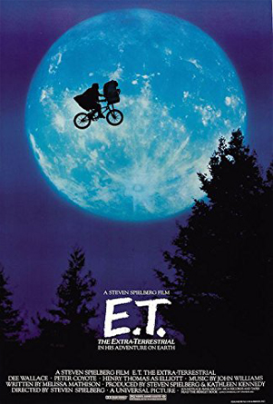

Biografia
El director, guionista y productor Steven Allan Spielberg nació el 18 de diciembre de 1946 en Cincinnatti, Ohio (Estados Unidos) De formación autodidacta, comenzó a rodar cortos a comienzos de los años 60 hasta que a los 18 años dirigió y escribió su primer largometraje, “Firelight” (1964), extenso título de ciencia-ficciónEn Los Angeles, Steven Spielberg intentó ingresar sin éxito en la Universidad de Southern California para estudiar Cinematografía. Tras dos tentativas infructuosas, logró ser admitido en la Universidad del Estado de California en Long Beach.En el año 2002 recibió finalmente su diploma de graduación.

Tiburon
Tiburon (1975)el film con el que Spielberg alcanzó
la fama internacional.
Una brillante adaptación
de la novela de Peter Benchley
Trata sobre
un gigantesco tiburón
blanco que amenaza
a los habitantes y turistas de
un pueblo costero.
Forman parte del elenco:
Roy Scheider
Robert Shaw
Richard Dreyfuss
Lorraine Gary
Murray Hamilton Carl
Gottlieb Jeffrey
Kramer Susan
Backlinie Peter Benchley
El rodaje de Tiburón comenzó el
2 de mayo de 1974 en la isla
Martha's Vineyard Massachusetts
localización seleccionada
Brown explicó que la
producción «necesitaba una
zona de vacaciones de
clase media baja
para que pareciera que los
ataques del tiburón podían
destruir su negocio turístico».
E.T El Extraterrestre

Con E.T logró cifras jamás